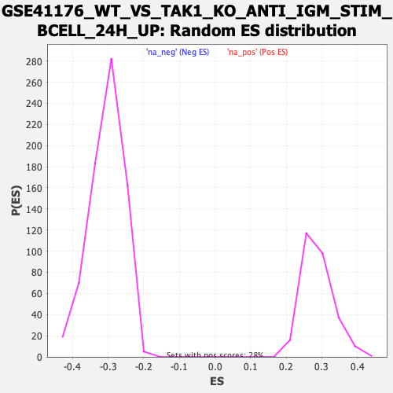

| | | Dataset | DE_genes |
| Phenotype | NoPhenotypeAvailable |
| Upregulated in class | na_neg |
| GeneSet | GSE41176_WT_VS_TAK1_KO_ANTI_IGM_STIM_BCELL_24H_UP |
| Enrichment Score (ES) | -0.529651 |
| Normalized Enrichment Score (NES) | -1.7410259 |
| Nominal p-value | 0.0 |
| FDR q-value | 3.2318255E-4 |
| FWER p-Value | 0.005 |
Table: GSEA Results Summary
 Fig 1: Enrichment plot: GSE41176_WT_VS_TAK1_KO_ANTI_IGM_STIM_BCELL_24H_UP
Fig 1: Enrichment plot: GSE41176_WT_VS_TAK1_KO_ANTI_IGM_STIM_BCELL_24H_UP
Profile of the Running ES Score & Positions of GeneSet Members on the Rank Ordered List
| PROBE | GENE SYMBOL | GENE_TITLE | RANK IN GENE LIST | RANK METRIC SCORE | RUNNING ES | CORE ENRICHMENT | | 1 | LST1 | | | 236 | 3.376 | 0.0020 | No |
| 2 | LY86 | | | 488 | 1.804 | -0.0051 | No |
| 3 | ATP6V0C | | | 499 | 1.776 | 0.0034 | No |
| 4 | FEM1C | | | 574 | 1.533 | 0.0065 | No |
| 5 | YWHAZ | | | 579 | 1.516 | 0.0141 | No |
| 6 | NQO1 | | | 701 | 1.274 | 0.0127 | No |
| 7 | HIC2 | | | 847 | 1.047 | 0.0086 | No |
| 8 | KDELR1 | | | 1059 | 0.790 | -0.0011 | No |
| 9 | ZFP36L1 | | | 1074 | 0.777 | 0.0020 | No |
| 10 | IL6ST | | | 1449 | 0.543 | -0.0197 | No |
| 11 | GSR | | | 1458 | 0.540 | -0.0174 | No |
| 12 | UBE2D2 | | | 1462 | 0.537 | -0.0148 | No |
| 13 | VDAC3 | | | 1493 | 0.520 | -0.0141 | No |
| 14 | PGD | | | 1598 | 0.472 | -0.0185 | No |
| 15 | TDP2 | | | 1599 | 0.472 | -0.0160 | No |
| 16 | RYBP | | | 1602 | 0.471 | -0.0137 | No |
| 17 | FADS1 | | | 1731 | 0.415 | -0.0200 | No |
| 18 | TESK1 | | | 1768 | 0.401 | -0.0202 | No |
| 19 | TFE3 | | | 1869 | 0.363 | -0.0249 | No |
| 20 | CREG1 | | | 1959 | 0.338 | -0.0290 | No |
| 21 | IL1RAP | | | 2066 | 0.305 | -0.0344 | No |
| 22 | CD163 | | | 2089 | 0.301 | -0.0342 | No |
| 23 | NUCB1 | | | 2144 | 0.283 | -0.0363 | No |
| 24 | SLC6A6 | | | 2145 | 0.283 | -0.0348 | No |
| 25 | CNPPD1 | | | 2222 | 0.261 | -0.0385 | No |
| 26 | FNDC3A | | | 2245 | 0.256 | -0.0386 | No |
| 27 | TRIM16 | | | 2299 | 0.244 | -0.0408 | No |
| 28 | ME2 | | | 2307 | 0.242 | -0.0400 | No |
| 29 | CNPY3 | | | 2634 | 0.184 | -0.0604 | No |
| 30 | ERF | | | 2643 | 0.183 | -0.0600 | No |
| 31 | PHF1 | | | 2795 | 0.162 | -0.0690 | No |
| 32 | EFHD1 | | | 2925 | 0.147 | -0.0767 | No |
| 33 | ASPH | | | 3055 | 0.136 | -0.0845 | No |
| 34 | ADM | | | 3133 | 0.128 | -0.0888 | No |
| 35 | GLA | | | 3429 | 0.105 | -0.1076 | No |
| 36 | RAB5B | | | 3466 | 0.101 | -0.1094 | No |
| 37 | KDELR2 | | | 4371 | 0.049 | -0.1684 | No |
| 38 | EPS8 | | | 4385 | 0.048 | -0.1690 | No |
| 39 | DNAJB9 | | | 4527 | 0.040 | -0.1780 | No |
| 40 | SERINC5 | | | 4799 | 0.026 | -0.1956 | No |
| 41 | CAPNS1 | | | 4954 | 0.019 | -0.2056 | No |
| 42 | PDIA4 | | | 4989 | 0.017 | -0.2077 | No |
| 43 | NRG1 | | | 4994 | 0.016 | -0.2079 | No |
| 44 | MTFR1 | | | 5129 | 0.010 | -0.2166 | No |
| 45 | CDS2 | | | 5355 | -0.002 | -0.2314 | No |
| 46 | GCLM | | | 5684 | -0.019 | -0.2527 | No |
| 47 | AGO2 | | | 5782 | -0.025 | -0.2590 | No |
| 48 | TUBB4A | | | 5908 | -0.033 | -0.2670 | No |
| 49 | GORASP2 | | | 5942 | -0.035 | -0.2690 | No |
| 50 | PCYT1A | | | 6148 | -0.050 | -0.2821 | No |
| 51 | CLIP1 | | | 6150 | -0.050 | -0.2819 | No |
| 52 | SLC3A2 | | | 6297 | -0.059 | -0.2912 | No |
| 53 | SOD1 | | | 6447 | -0.069 | -0.3006 | No |
| 54 | HMGA1 | | | 6489 | -0.072 | -0.3029 | No |
| 55 | CDKN3 | | | 6497 | -0.073 | -0.3030 | No |
| 56 | PPIF | | | 6591 | -0.079 | -0.3087 | No |
| 57 | PRCP | | | 6670 | -0.086 | -0.3133 | No |
| 58 | CNTN6 | | | 6678 | -0.086 | -0.3133 | No |
| 59 | TXNRD1 | | | 6875 | -0.101 | -0.3256 | No |
| 60 | RIT1 | | | 7013 | -0.112 | -0.3340 | No |
| 61 | FICD | | | 7158 | -0.123 | -0.3428 | No |
| 62 | UGDH | | | 7169 | -0.124 | -0.3428 | No |
| 63 | SPAG9 | | | 7232 | -0.129 | -0.3462 | No |
| 64 | CKS2 | | | 7267 | -0.133 | -0.3478 | No |
| 65 | TPST2 | | | 7311 | -0.137 | -0.3499 | No |
| 66 | PCSK5 | | | 7339 | -0.140 | -0.3509 | No |
| 67 | MEIS3P1 | | | 7375 | -0.142 | -0.3525 | No |
| 68 | GFPT1 | | | 7423 | -0.147 | -0.3548 | No |
| 69 | GCLC | | | 7481 | -0.151 | -0.3578 | No |
| 70 | YWHAQ | | | 7531 | -0.154 | -0.3602 | No |
| 71 | ACSL3 | | | 7616 | -0.163 | -0.3648 | No |
| 72 | TLK1 | | | 7656 | -0.167 | -0.3665 | No |
| 73 | FAH | | | 7665 | -0.167 | -0.3662 | No |
| 74 | IDS | | | 7707 | -0.171 | -0.3680 | No |
| 75 | PITPNA | | | 7818 | -0.181 | -0.3742 | No |
| 76 | SRSF3 | | | 7876 | -0.186 | -0.3770 | No |
| 77 | HTATIP2 | | | 8328 | -0.232 | -0.4053 | No |
| 78 | KIAA0232 | | | 8336 | -0.233 | -0.4046 | No |
| 79 | MANF | | | 8573 | -0.259 | -0.4187 | No |
| 80 | ANXA2 | | | 8661 | -0.269 | -0.4230 | No |
| 81 | ECI1 | | | 8708 | -0.275 | -0.4246 | No |
| 82 | DEGS1 | | | 8737 | -0.278 | -0.4250 | No |
| 83 | TUBB2A | | | 8743 | -0.279 | -0.4239 | No |
| 84 | TKT | | | 9023 | -0.313 | -0.4405 | No |
| 85 | ARIH1 | | | 9039 | -0.316 | -0.4399 | No |
| 86 | ZNF516 | | | 9143 | -0.328 | -0.4449 | No |
| 87 | HRAS | | | 9295 | -0.347 | -0.4530 | No |
| 88 | GBE1 | | | 9337 | -0.351 | -0.4539 | No |
| 89 | PITPNM1 | | | 9421 | -0.361 | -0.4575 | No |
| 90 | RHOB | | | 9441 | -0.365 | -0.4568 | No |
| 91 | ATF2 | | | 9489 | -0.372 | -0.4580 | No |
| 92 | CDKN1C | | | 9666 | -0.398 | -0.4675 | No |
| 93 | FLNB | | | 9774 | -0.413 | -0.4723 | No |
| 94 | POR | | | 9795 | -0.417 | -0.4715 | No |
| 95 | CA2 | | | 9913 | -0.434 | -0.4769 | No |
| 96 | CAMSAP1 | | | 10002 | -0.447 | -0.4803 | No |
| 97 | UBE2S | | | 10171 | -0.473 | -0.4889 | No |
| 98 | PSMD7 | | | 10205 | -0.478 | -0.4886 | No |
| 99 | RRBP1 | | | 10388 | -0.503 | -0.4979 | No |
| 100 | PPARG | | | 10432 | -0.509 | -0.4981 | No |
| 101 | OAT | | | 10552 | -0.529 | -0.5032 | No |
| 102 | FAU | | | 10582 | -0.534 | -0.5023 | No |
| 103 | UBE2H | | | 10639 | -0.544 | -0.5031 | No |
| 104 | STRN | | | 10642 | -0.544 | -0.5005 | No |
| 105 | TRIM2 | | | 10712 | -0.555 | -0.5021 | No |
| 106 | BMP6 | | | 10761 | -0.562 | -0.5024 | No |
| 107 | KEAP1 | | | 10791 | -0.566 | -0.5013 | No |
| 108 | SLC25A1 | | | 10848 | -0.575 | -0.5020 | No |
| 109 | PGM3 | | | 10895 | -0.581 | -0.5020 | No |
| 110 | ZFAND5 | | | 10926 | -0.587 | -0.5010 | No |
| 111 | VAMP3 | | | 10997 | -0.596 | -0.5025 | No |
| 112 | TUBB3 | | | 11047 | -0.605 | -0.5025 | No |
| 113 | BLVRB | | | 11079 | -0.611 | -0.5014 | No |
| 114 | TPI1 | | | 11082 | -0.612 | -0.4984 | No |
| 115 | RNH1 | | | 11240 | -0.644 | -0.5053 | No |
| 116 | PTOV1 | | | 11397 | -0.678 | -0.5120 | No |
| 117 | RALY | | | 11667 | -0.735 | -0.5258 | Yes |
| 118 | TBXAS1 | | | 11669 | -0.736 | -0.5221 | Yes |
| 119 | SQSTM1 | | | 11671 | -0.736 | -0.5184 | Yes |
| 120 | ADRM1 | | | 11714 | -0.744 | -0.5173 | Yes |
| 121 | HYOU1 | | | 11772 | -0.756 | -0.5171 | Yes |
| 122 | RNF103 | | | 11813 | -0.764 | -0.5158 | Yes |
| 123 | STX5 | | | 11837 | -0.770 | -0.5133 | Yes |
| 124 | GMPS | | | 11958 | -0.796 | -0.5170 | Yes |
| 125 | HDAC5 | | | 11997 | -0.804 | -0.5154 | Yes |
| 126 | FAM89B | | | 12101 | -0.830 | -0.5178 | Yes |
| 127 | IP6K1 | | | 12153 | -0.843 | -0.5168 | Yes |
| 128 | BCAP31 | | | 12165 | -0.845 | -0.5132 | Yes |
| 129 | NDEL1 | | | 12203 | -0.855 | -0.5112 | Yes |
| 130 | JOSD1 | | | 12258 | -0.867 | -0.5102 | Yes |
| 131 | MGAT1 | | | 12261 | -0.867 | -0.5059 | Yes |
| 132 | BCAR3 | | | 12305 | -0.878 | -0.5041 | Yes |
| 133 | MCFD2 | | | 12547 | -0.940 | -0.5151 | Yes |
| 134 | HSPA5 | | | 12732 | -0.991 | -0.5220 | Yes |
| 135 | SLC10A3 | | | 12766 | -1.001 | -0.5190 | Yes |
| 136 | TMEM41B | | | 12782 | -1.005 | -0.5148 | Yes |
| 137 | TRIB1 | | | 12849 | -1.028 | -0.5138 | Yes |
| 138 | BAHD1 | | | 12887 | -1.041 | -0.5108 | Yes |
| 139 | JMJD1C | | | 12940 | -1.058 | -0.5088 | Yes |
| 140 | KCTD7 | | | 12948 | -1.061 | -0.5037 | Yes |
| 141 | HOMER3 | | | 13116 | -1.110 | -0.5089 | Yes |
| 142 | RABAC1 | | | 13151 | -1.121 | -0.5054 | Yes |
| 143 | SMARCD3 | | | 13165 | -1.125 | -0.5004 | Yes |
| 144 | ZBED4 | | | 13170 | -1.126 | -0.4948 | Yes |
| 145 | VCP | | | 13263 | -1.160 | -0.4949 | Yes |
| 146 | MAPK7 | | | 13317 | -1.180 | -0.4922 | Yes |
| 147 | UBTF | | | 13322 | -1.181 | -0.4864 | Yes |
| 148 | KLC1 | | | 13359 | -1.197 | -0.4826 | Yes |
| 149 | SETD3 | | | 13371 | -1.203 | -0.4771 | Yes |
| 150 | HDLBP | | | 13384 | -1.206 | -0.4716 | Yes |
| 151 | RNF4 | | | 13418 | -1.219 | -0.4675 | Yes |
| 152 | SOGA1 | | | 13450 | -1.232 | -0.4631 | Yes |
| 153 | MIR22HG | | | 13514 | -1.258 | -0.4608 | Yes |
| 154 | FOSL1 | | | 13518 | -1.260 | -0.4544 | Yes |
| 155 | HPCAL1 | | | 13539 | -1.270 | -0.4492 | Yes |
| 156 | CYTH2 | | | 13544 | -1.271 | -0.4429 | Yes |
| 157 | GOLGA2 | | | 13552 | -1.275 | -0.4368 | Yes |
| 158 | SERTAD2 | | | 13639 | -1.306 | -0.4356 | Yes |
| 159 | UBN1 | | | 13651 | -1.313 | -0.4296 | Yes |
| 160 | TSPO | | | 13696 | -1.328 | -0.4256 | Yes |
| 161 | WIPI2 | | | 13707 | -1.334 | -0.4193 | Yes |
| 162 | ATP6V0D1 | | | 13861 | -1.405 | -0.4221 | Yes |
| 163 | NDUFS7 | | | 13921 | -1.434 | -0.4185 | Yes |
| 164 | SEC16A | | | 13924 | -1.435 | -0.4113 | Yes |
| 165 | ULK1 | | | 14112 | -1.541 | -0.4155 | Yes |
| 166 | ARF5 | | | 14152 | -1.573 | -0.4100 | Yes |
| 167 | JAG1 | | | 14329 | -1.676 | -0.4128 | Yes |
| 168 | EMP1 | | | 14445 | -1.749 | -0.4113 | Yes |
| 169 | EZR | | | 14463 | -1.761 | -0.4033 | Yes |
| 170 | SLC6A8 | | | 14550 | -1.828 | -0.3995 | Yes |
| 171 | KLHL21 | | | 14584 | -1.855 | -0.3921 | Yes |
| 172 | MEF2D | | | 14625 | -1.896 | -0.3849 | Yes |
| 173 | PLEKHO2 | | | 14643 | -1.913 | -0.3761 | Yes |
| 174 | RHOC | | | 14677 | -1.947 | -0.3682 | Yes |
| 175 | JMJD6 | | | 14731 | -1.999 | -0.3614 | Yes |
| 176 | ACVR1 | | | 14743 | -2.010 | -0.3517 | Yes |
| 177 | AFG3L2 | | | 14761 | -2.027 | -0.3423 | Yes |
| 178 | TSPAN4 | | | 14951 | -2.238 | -0.3431 | Yes |
| 179 | DUSP1 | | | 14967 | -2.266 | -0.3324 | Yes |
| 180 | ASMTL | | | 15002 | -2.303 | -0.3227 | Yes |
| 181 | GADD45A | | | 15049 | -2.381 | -0.3134 | Yes |
| 182 | GRB10 | | | 15102 | -2.475 | -0.3040 | Yes |
| 183 | LMNA | | | 15123 | -2.501 | -0.2924 | Yes |
| 184 | HMOX1 | | | 15137 | -2.517 | -0.2803 | Yes |
| 185 | TSPYL2 | | | 15272 | -2.853 | -0.2743 | Yes |
| 186 | PLEKHM1 | | | 15294 | -2.898 | -0.2607 | Yes |
| 187 | AKAP17A | | | 15295 | -2.902 | -0.2457 | Yes |
| 188 | MAPKAPK2 | | | 15312 | -2.988 | -0.2313 | Yes |
| 189 | GGA2 | | | 15318 | -3.026 | -0.2160 | Yes |
| 190 | ODC1 | | | 15362 | -3.292 | -0.2018 | Yes |
| 191 | AHNAK | | | 15364 | -3.314 | -0.1847 | Yes |
| 192 | MOAP1 | | | 15368 | -3.337 | -0.1677 | Yes |
| 193 | SLC39A7 | | | 15400 | -3.576 | -0.1512 | Yes |
| 194 | ATG4B | | | 15414 | -3.724 | -0.1328 | Yes |
| 195 | PLEKHM2 | | | 15422 | -3.844 | -0.1134 | Yes |
| 196 | SFN | | | 15427 | -3.952 | -0.0932 | Yes |
| 197 | JUN | | | 15456 | -4.705 | -0.0708 | Yes |
| 198 | TUBB4B | | | 15465 | -5.085 | -0.0450 | Yes |
| 199 | FOS | | | 15471 | -8.771 | 0.0000 | Yes |
Table: GSEA details [plain text format]

Fig 2: GSE41176_WT_VS_TAK1_KO_ANTI_IGM_STIM_BCELL_24H_UP: Random ES distribution
Gene set null distribution of ES for GSE41176_WT_VS_TAK1_KO_ANTI_IGM_STIM_BCELL_24H_UP